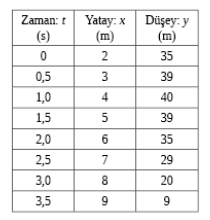
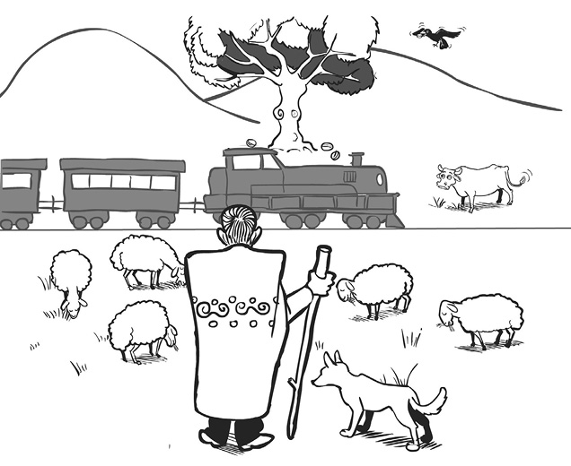
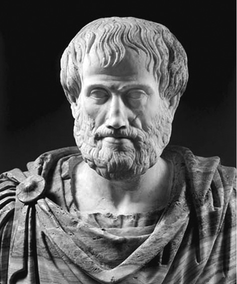

1. Bölüm - GİRİŞ ve GENEL KAVRAMLAR
1- Görelilik kuramı nedir?
- Görelilik kuramı nedir?
- Bana göre olan ile sana göre olan ne bakımdan aynıdır, ne bakımdan farklıdır? Farklı olan tarafların bana göre ve sana göre görünümleri birbiriyle ilişkili midir? Evet ise, bu ilişki nedir?
Biraz somutlaştırmak gerekirse, bana göre hızla giden bir araba, sen giden bir otobüste otururken, sana göre ne yapıyordur? Benim falanca frekansta duyduğum sesi ya da gördüğüm ışığı, sen hangi frekansta duyar ya da görürsün? Duyar ya da görür müsün? Bunları, yani senin olayları nasıl gördüğünü/duyduğunu, sana sormadan bilebilir miyim? Sen ve ben bir arabanın, kuşun, merminin... hareketini, ışığın ya da sesin davranışını aynı şekilde mi anlarız?
Görelilik kuramı, bu soruların cevaplarını araştıran bir düşünce disiplinidir. Ancak, bu soruları yalnızca fizik (dolayısıyla doğabilimleri) açısından ele alır, felsefi yönleriyle ilgilenmez.
2-Bu kurama neden ihtiyaç var?
- Hareket eden kişi, diğer hareketlinin hareketini yanlış görür, doğrusu duran kişinin gördüğüdür gibi geliyor bana..
- Duran kişi mi? Kimin durduğunu söyleyebiliriz ki? Bize durağan gibi görünen şu dağlar, dünyanın ekseni etrafında saatte yaklaşık 1300 km hızla1 dönmüyor mu?
11)Türkiye’nin enleminde.
- Peki dünyanın merkezi durağan mı diyeceğim, o da Güneş’in etrafında dönüyor diyeceksiniz...
- Hem de saniyede 30 km hızla. Dikkatini çekerim, saatte değil, saniyede...
- Güneş...
- O da saniyede 220 km hızla gökadamızın (Samanyolu) merkezinin etrafında dönüyor...
- Bu nereye kadar böyle devam edecek?
- Bilmem... Ama bir önemi yok. Göreliliğin ana fikri, bunun bir öneminin olmaması zaten. En azından, özel görelilikte sabit hızlı ve yönlü hareketlerin—
- Yani kimseye durağan diyemiyoruz, dolayısıyla—
- Ayrıcalıklı gözlemci yok. Tüm gözlemciler eşit.
- Nasıl tüm gözlemciler? Nasıl eşit?
- Birbirlerine göre sabit hızla ve sabit yönde (daha kısa, ama matematiksel deyişle, sabit vektörel hızda) hareket eden tüm gözlemciler eşdeğerdir. Şu anlamda: Yaptıkları gözlemler sonucunda aynı doğa (fizik) kurallarına varırlar. Yani doğru fizik kurallarını bulabilmek -ve sonra uygulayabilmek- açısından, hiçbir gözlemci ayrıcalıklı değildir; hepsinin buldukları kurallar aynı derecede doğrudur, çünkü aynıdır.
Yalnız burada iki hususu vurgulamam gerek: Birincisi, sabit bir hızla dönen gözlemci, bu eşdeğerlik sınıfına girmez: 900 km/h hızla bile giderken, türbülanssız bir bölgede uçan bir uçağın içinde, bir anormallik hissetmeden dolaşabilir, yiyip içebilir, istersek (ve uçak bize aitse ) masa tenisi bile oynayabiliriz. Ama bunların hiçbirini, dönen bir atlıkarınca platformu üzerinde yapamayız. Demek ki, örneğin masa tenisi topu uçakta, yerde sabit olduğumuz durumdaki ile aynı şekilde hareket ediyor; ama dönen platformda farklı şekilde. Aynı şey bardaklarımızdaki sıvıların davranışı için de söz konusu. Sonuç olarak, uçakla birlikte sabit vektörel hızla hareket eden gözlemci(ye göre olaylar) yerdekine eşdeğer, platform ile birlikte düzgün dairesel hareket yapan gözlemci(ye göre olaylar) yerdekine eşdeğer değil.
- Tabii olmaz. Merkezkaç kuvveti var.
- Hayır, yok. “Merkezkaç kuvveti”, fiziksel bir kuvvet değildir, “zevahiri kurtarmak” için uydurulan bir şeydir. Ama bunu daha sonra konuşsak (Soru 11’de), daha iyi...
- Peki, öyle olsun... İki konuyu vurgulayacaktınız.
- İkincisi, de şu ki, sabit vektörel hızla hareket eden gözlemcilerin buldukları kurallar aynıdır dedim, ama gözlemleri aynıdır demedim. En basitinden, uçak gözlemcisine göre sabit olan bir cisim (örneğin uçağın bir koltuğu) yer gözlemcisine göre hareket halindedir.
- Biraz somutlaştırsak da gözlem, gözlemci, kural kavramları biraz netleşse...
- Tabii, bizim kültürümüzde analoji önemlidir, değil mi? O yüzden bizde bol bol atasözü, darbımesel kullanılır, mesel anlatılır. Bu da bizim meselimiz olsun:
Meraklı bir çoban varmış. Koyunlar yumuşak huylu, pek sorun çıkarmayan yaratıklar olduğundan, çobanın merak ettiği şeyler üzerine düşünmeye bol bol vakti olurmuş.
Gel zaman, git zaman, havada hareket konusuna merak sarmış. Önce bir müddet kuşları gözlemiş. Ama onların hareketlerini fazla karmaşık bulmuş. Sonra bir gün, kargaların yakındaki ceviz ağacının dibinden alıp, kırmak için yüksekten yere bıraktığı cevizlerin hareketlerinin daha basit olduğunu fark etmiş. Bu daha basit olguyla başlamaya karar verip, cevizlerin olgunluk mevsiminde, uygun bir noktadan ağacı, kargaları ve cevizleri gözlemeye başlamış.
Tabii öyle sırf bakmakla olmaz, verileri kaydetmek lazım. Bu iş için bir dijital fotoğraf makinesi edinmiş, her yarım saniyede bir çekim yapmaya ayarlamış ve bir karga cevizini bıraktığı anda deklanşöre basıp, ceviz yere düşene kadar çekmeye devam etmiş. Her ceviz için, fotoğraflardan cevizin ağaçtan yatay ve yerden düşey mesafesini ölçüp Tablo 1’in bir benzerini yapmış.2 Tabii ki verilerin sağlıklı olması için fotoğrafları hep aynı yerden ve objektifin en az geniş ayarıyla çekmiş. (Böylece perspektif hatasını azaltıyor.)
2) Lise ve üstü öğrencileri için: Tabloda, her t değerine yalnız bir x ve bir y değerinin karşılık geldiğini (tersi geçerli değil, örneğin 35 m y değerine hem 0, hem 2,0 s karşılık geliyor) ve bir zaman aralığında her t değerine mutlaka birer x ve y değerinin karşılık geldiğini göreceksiniz. Tabii bu, zamanın doğası gereği; ama aynı zamanda matematik dersindeki fonksiyon tanımıyla örtüşüyor, değil mi? Yani çoban, cevizin yatay ve düşeydeki konumunu zamanın fonksiyonu olarak bulmuştur; bir cismin hareketi ile ilgili temel veri kümesi işte bu fonksiyonlardır, bunlara konum fonksiyonları (Ünv: Üç boyutta x(t), y(t), z(t)’nin bir araya gelip meydana getirdiği vektör fonksiyona konum vektörü) deriz.

Tablo 1. Bir cevizin uçuş verileri.
Tüm tablolarında şunu görmüş: Tabloda yukarıdan aşağıya gelindikçe x’deki değişim aşağı yukarı sabitmiş, ama y’deki değişim azalıyor, pozitif başlasa bile, negatif sayılara doğru gidiyormuş. (Tablo 1’de x değişimlerinin hepsi +1, y değişimleri +4, +1, -1, -4, -6, -9, -11.) Ancak, y’deki değişimlerin farklarını aldığında (Tablo 1 için -3, -2, -3, -2, -3, -2. Burada 1’den 4’ü çıkararak ilk -3’ü, -1’den 1’i çıkararak takip eden -2’yi bulduk vb.), fazla değişmeyen sayılar buluyormuş. Bir sürü tablo inceleyerek bu y değişiminin değişiminin sabit olması gerektiğini, Tablo 1 için bulduğumuz rakamların, örneğin -3 ile -2 arasında oynamasının gerçek bir değişim olmayıp, yalnızca verilerin yeterince hassas olmaması ve gerçek sabit değerin bu iki değer arasında olmasından kaynaklandığını bulmuş.
Otlaktan geçen bir tren yolu varmış, çobanın bir arkadaşı bu trende makinist olarak çalışıyormuş. (Bkz. Şekil 1.) Çoban, keşfini arkadaşıyla paylaşmış, anlattıkları arkadaşının çok hoşuna gitmiş. Makinist de kendi fotoğraf makinesini lokomotife sabitlemiş, aynı yerde ceviz bırakan bir karga görürse, o da aynı şekilde fotoğraf çekip, tablolar yapmaya başlamış. Ancak, ağaç hareket yüzünden flu çıktığından, makinist yatay mesafeyi (yani x değerini) fotoğrafın sol kenarından ölçmeye karar vermiş.
Makinist de aynı sonuca varmış. Yani her ceviz için x değerinin fotoğraftan fotoğrafa aynı miktar değiştiğini (ama genellikle negatif olduğunu), y değerinin değişim miktarının ise fotoğraftan fotoğrafa sürekli negatif yönde değiştiğini bulmuş. Üstelik, bu “değişimin değişimi” miktarı, çobanın bulduğu ile aynı imiş!
Bunu aynı bulunca, ikisinin gözlemleri arasında başka ne ilişkiler olabileceğini merak etmişler. Kasabadaki kütüphaneye gidip biraz kitap karıştırınca, -hava direncinin ihmal edilebildiği durumlarda- tüm cisimlerin düşey boyutta aynı ivmeyle düştüğünü bulduklarını anlamışlar. Çoban
Şekil 1. Çoban, makinistin treni ve bir karga. Çizim: Barış Mengütay.,

kitaplardan birini ödünç almış ve buradan, aynı ceviz için kendisinin ve makinistin tuttukları tabloları birbirlerine dönüştürebileceğini öğrenmiş.
Düşen cevizlerin hareketinin çoktan çözülmüş olduğunu anlayınca, iki kafadar, daha zor bir şey inceleyelim deyip, kargaların kendilerini gözlemlemeye başlamışlar; donanımlarını da iyileştirerek gözlem süresini uzatmışlar. Ancak, kargalar kanatları sayesinde sürekli yön değiştirdikleri için, hareketleri hakkında kural bulmak cevizler kadar kolay değilmiş; galiba hâlâ bulmaya çalışıyorlarmış kargaların hareket kurallarını.
Bu meselin bizi ayrıca ilgilendiren bir ara adımı da var:
Az önce bahsettiğim dönüşümü öğrendikten sonra, her ihtimale karşı, makinist ceviz ağacının hizasına geldiği anda, ikisi de kronometrelerini sıfırlamayı âdet edinmişler. Nitekim bir gün, tren geçtiği sırada koyunlardan birinin doğumu başlamış, çoban onunla ilgilendiği için gözlemini yarım bırakmak zorunda kalmış. Sevimli kuzu doğduktan sonra biraz düşünmüş, sonra cep telefonunu çıkarıp, makinisti aramış.
“Kusura bakma, bugünkü karganın verilerinin bir kısmını kaçırdım, senin verilerini alabilir miyim?”
“Vereyim vermesine ama, benim verilerim sana uyacak mı ki? Sana göre ileri giden kargalar bile bana göre geri gidiyor.”
“Dönüşümü hatırla,” demiş çoban, “uydururuz.”
“Peki. Gerçi benim o dönüşümü anlayacak kadar inceleme fırsatım olmadı, işi yaptıktan sonra bana da anlat. Hem sende GPRS ya da 3G var mıydı, istersen e-posta eklentisi olarak yollayayım…”
Çoban, verileri aldıktan sonra, tablonun her satırına, birkaç basit işlemden oluşan dönüşümü uygulamış ve kendisi gözlem yapmış gibi, tablosunu tamamlayabilmiş. Zaten makinistin verilerinin ilk kısmı kendisinin koyunun doğumu başlamadan önce yapabildiği gözlemle aynı zamana denk geldiği için, dönüşüm işlemini doğru yapıp yapmadığının sağlamasını da yapması mümkün olmuş.
- Bakalım “kıssadan hisse” çıkarabilecek miyim:
1. Bir cismin hareketinin gözlemi, mümkün olduğu kadar çok t anında, cismin örneğin yatayda, düşeyde ve derinlik yönünde x, y, z konumlarının [matematik diliyle x(t), y(t), z(t) fonksiyonlarının] belirlenmesidir.
2. Birbirine göre sabit (vektörel) hızla hareket eden iki gözlemci, aynı cisim ya da cisimleri inceledikleri zaman, aynı kuralları bulur. [Meselde cevizin (a) yataydaki hızının sabit olması, (b) düşeydeki hızının her saniye yaklaşık aynı miktarda negatife gitmesi.]
3. Ancak, veriler farklı olabilir. (Meselde cevizin yataydaki sabit hızının çobana göre bir değer, makiniste göre başka bir değer olması.)
4. Bu iki gözlemcinin elde ettikleri veriler, birbirlerine dönüştürülebilir. Dönüştürme yöntemi, veri kümesinden bağımsız, ama bir gözlemcinin diğerine göre hızına bağlıdır.
- Doğru. Senin ikinci ve dördüncü maddelerin, göreliliğin özünü oluşturuyor.
3- Galileo göreliliğiyle Einstein özel göreliliği arasındaki ilişki nedir?
- İyi ama, şimdiye kadar hiç Einstein’dan bahsetmedik?
- Görelilik kavramı, çoğu kişinin zannettiğinin aksine Einstein ile değil, Galileo ile başlar. Galileo’dan Einstein’a kadar görelilik, hareket yasalarının bir özelliği olarak düşünülüyordu. Einstein ise bunun bir bilimsel ilke olması, yani tüm doğa yasalarının bu özelliğe sahip olması gerektiğinde ısrar etti.
Galileo/Newton zamanında elektromanyetizma yasaları bilinmiyordu. Sonraki yüzyıllarda bu yasalar keşfedildi, üstelik—
- Ne yasaları???
- Elektromanyetizma. Yani elektrik ve manyetik kuvvetler, dolayısıyla alanlar, elektrik yükler ve elektrik akımlar arasındaki ilişkileri betimleyen yasalar. Bazılarını duymuş ya da öğrenmişsindir; Coulomb ve Faraday yasaları gibi...
- Doğru, bunları biliyorum...
- Üstelik, elektromanyetizma yasalarının optik alanını da kapsadığı ve ışığın bir elektromanyetik dalga olduğu da anlaşıldı. Ancak bu yasalar, hareket yasalarının sahip olduğu görelilik özelliğine sahip değillerdi, yani bir gözlemcinin gözlemlerine, önceki soruda bahsettiğim (hani çoban, makinistin verilerini dönüştürmüştü, ama nasıl yaptığını matematiksel olarak açıklamamıştım) dönüşüm uygulandığında, aynı yasalarla uyumlu veriler -bir başka deyişle aynı yasalar, çünkü bir bakıma yasalar verilerin özetidir- çıkmıyordu.
Çoğu bilimci buna “Elektromanyetizma yasaları görelilik özelliğine sahip değil. Ne yapalım, öyleymiş demek” diye özetleyebileceğim şekilde yaklaşırken, Einstein bu durumun kabul edilemez olduğunda ısrar etti. “Eğer elektromanyetizma yasaları uygun şekilde dönüşmüyorsa, -ve bu yasalar doğruysa- dönüşüm yapılma fikri değil, dönüşüm yöntemi yanlış olmalıdır” sonucuna vardı ve elektromanyetizma yasalarına görelilik özelliği sağlayan yeni bir dönüşüm yönteminin kullanılması gerektiğini söyledi.
Öte yandan bu yeni dönüşüm de, Galileo-Newton hareket yasalarına görelilik özelliği sağlamıyordu. Bu durumda, eğer Einstein gibi görelilik konusunda ısrar edeceksek, hareket yasalarının da değişmesi gerekiyordu. Bu yeni hareket yasaları ve yeni dönüşüm yöntemi bir araya gelince, zamanın da göreli olması, ışık hızının sınır olması, kütle-enerji eşdeğerliği gibi herhalde az buçuk duymuş olduğun çeşitli devrimsel sonuçlar çıktı ortaya.
İşte hem bu çarpıcı sonuçlar yüzünden, hem de göreliliği ısrarla bir bilimsel ilke olarak, yani bilimsel yasadan daha önemli kabul ederek vurgulaması yüzünden Einstein’ın ismi görelilik ile bu denli özdeşleşmiştir.
Tabii ki kimsenin ısrarıyla bilimsel yasa ya da ilke olmaz. Nihai onaylayıcı deneydir, gözlemdir. Ve bu yeni dönüşüm ile uyumlu yasalar, yani elektromanyetizma ile yeni hareket yasaları, Einstein zamanından bu yana tüm testlerden başarıyla geçmiştir.
4-Ya Einstein’ın Newton’u yanlışladığı gibi yarın birisi de Einstein’ı yanlışlarsa?
- Ya Einstein’ın Newton’u yanlışladığı gibi yarın birisi de Einstein’ı yanlışlarsa?
- Bu, bilimin nasıl geliştiğini anlamayan çoğu kimsenin düştüğü bir yanılgıdır; postmodern bir şey diyorlar ama... Bir kere, bir bilimsel yasanın yanlışlanması diye bir şey olamaz. En azından, bilimsel yöntemin yaygınca kullanılmaya başlamasından beri bu böyle...
- Nasıl yani, Newton mekaniği yanlış değil mi şimdi?
- Tabii ki değil. Örneğin, Jüpiter, Satürn, Uranüs ve Neptün’ün yanlarından geçen Voyager II uzay aracının yörünge hesaplarında NASA tamamen Newton’un hareket ve genelçekim yasalarını kullandı ve 12 yıl ve yaklaşık 5 milyar km’lik yolculuktan sonra, hata yalnızca bir saniye mertebesindeydi. Yani NASA’nın bu hesaplar için Einstein’a, bir diğer deyişle özel ya da genel göreliliğe ihtiyacı yoktu.
- Biraz kafam karıştı... Newton ile Einstein aynı şeyi söylemiyorlar, değil mi?
- Hayır, söylemiyorlar...
- Ama aynı konudan bahsediyorlar, değil mi? Hareketten.
- Başka şeylerden de bahsediyorlar ama, yalnızca hareket konusunu göz önüne alalım şimdilik...
- Aynı konuda, birbirinden farklı iki şeyin ikisi birden doğru olamaz ki!
- Diyelim ki bir otomobiliniz var, bir de dörtçeker arazi aracı aldınız. Otomobil birdenbire işe yaramaz, bir yere gidemez hale mi gelir?
- Tabii ki hayır...
- Otomobille eskiden ne yapıyorduysanız, aynısını hâlâ yapabilirsiniz, değil mi? Peki otomobiliniz varken dörtçeker aracı niçin alırsınız?
- Ya gösteriş için...
- Ya da...
- Ya da... otomobili kullanamayacağımız bazı yer ve zamanlarda kullanmak için.
- Aynen öyle... Otomobilin bazı sınırları vardır, ancak normal yollarda ve aşırı olmayan hava koşullarında kullanabilirsiniz. Ama dörtçeker aracı hem otomobili kullandığınız yer ve koşullarda kullanabilir, hem de bunların ötesine geçebilirsiniz. Örneğin araziye ya da karlı günlerde trafiğe çıkabilirsiniz. Peki neden herkes dörtçeker araç kullanmıyor?
- Daha pahalı da ondan!
- Yalnızca daha pahalı değil... Aynı zamanda dörtçeker sistemi yüzünden daha karmaşık. Bu yüzden, bakım maliyeti daha yüksek. Yine dörtçeker sistemi hem sürtünmeyi hem de ağırlığı arttırdığından, yakıt tüketimi de daha fazla.
- Dolayısıyla, eğer otomobil işinizi görüyorsa, dörtçeker araç almazsınız...
- Bilimsel kuramlar da böyledir. Yenisinin geliştirilmesi eskisini geçersiz kılmaz, eski kuram kendi sınırları içinde geçerliliğini ya da faydalılığını sürdürür; bir bakıma bu ikisi aynı şeydir zaten. Eski ve yeni kuramların bakış açıları taban tabana zıt da olsa, aralarında çok büyük kavramsal farklar, Kuhn’un deyişiyle “paradigma kayması” da olsa, bu faydalılık değişmez, çünkü bir önceki sorunun yanıtında söylediğim gibi, eski kuram eğer uzun bir süre geçerli kabul edildi ise, bir sürü deneysel/gözlemsel testlerden başarıyla geçmiş olması gerekir. Yeni bir kuram geliştirildi diye bütün bu testlerin sonucu değişecek değil elbette. Yani elimden şu anahtarlığı bırakırsam düşer, yarın-öbür gün yeni bir genelçekim kuramı geliştirilirse, birdenbire düşmekten vazgeçmeyecek.
- Peki düşen bir taşın hareketini eski yasa ile hesaplayacağım. Yeni yasa ile neyi hesaplayacağım?
- İstersen taşın düşüşünü de yeni kuram ile hesaplayabilirsin, ama matematiksel işlem genellikle eski kuram çerçevesinde yapacağından daha karmaşık olacaktır, otomobille gidebileceğin bir yere dörtçeker araç ile de gidebileceğin, ama genellikle daha fazla yakıt tüketeceğin gibi...
- Taşın düşüşü bizim hangi yasayı kullandığımızdan bağımsız olduğuna göre, iki yasa da aynı sonucu verecek, değil mi?
- Tabii ki pratikte aynı rakamsal sonucu verecekler. Yani örneğin Tablo 1 benzeri verileri öngörmek için iki kuram ile birer hesap yapılsa, varılan sonuçlar ya tam aynı, ya da aralarındaki fark deneysel olarak ölçülemeyecek kadar küçük olacaktır. İlk saniyede taşın düşüşü için bir kuramın 5,00000, diğerinin 5,0000000000002 m öngördüğünü düşün. Elindeki metre çubuğunun en küçük bölmeleri birer milimetre ise, pratikte iki kuram aynı sonucu vermiş demektir.
Zaten bu beklenti, bir yeni kuramın geliştirilmesinde mihenk taşı görevini görür. Bazı durumlarda gözlem veya deneyler mevcut kuramın öngörülerinden farklı sonuçlar verirse, yeni kuram geliştirmek gerekir. Bu sınır durumlarda yeni kuramın öngörülerinin gözlem ve/veya deney sonuçlarıyla uyuşması istenir, ama eski kuramın zaten uyuştuğu durumlarda da, gözlem ve/veya deney sonuçlarıyla, dolayısıyla eski kuramla uyuşması gerekir.
- Anladım. Hatta bir analoji de ben düşündüm: Kullandığımız bir bilgisayar yazılımının daha ileri bir versiyonu çıktığı zaman eskisi kullanılmaz hale gelmiyor. Örneğin bu bir kelime-işlem yazılımı ise, yine eskisini yazmak için kullanabiliyorum. Ancak yenisiyle, eskisiyle yapamadığım bazı şeyleri de yapabiliyorum. HTML ya da pdf gibi farklı formatlarda kaydedebilmek, web bağlantısı koyabilmek gibi.
Yahut yazılım bir oyun ise, örneğin bir otomobil yarışı oyunu; yenisinde daha fazla parkur, daha fazla otomobil, daha gerçeğe yakın grafikler oluyor. Yeni doğa yasasının eskisinden daha kapsamlı, ve aynı olaydan bahsederken gözlem ve/veya deneye daha yakın öngörülerde bulunması gibi. Ama yazılımımı güncellemesem de eski versiyonunu oynamaya devam edebilirim, o yeni parkurlarda ya da yeni otomobillerle oynamak istemediğim sürece. Tabii bir futbol oyunu yazılımı için de benzeri şeyler söylenebilir.
- Evet, bu analojiyi beğendim. Hatta yeni versiyonu görünce bazen eskisinin gözümüze kötü görünmesi gibi, zamanla deney/gözlem hassaslığı artınca eski ve yeni kuramların öngörüleri arasındaki fark, eskisinin geçerlilik alanında da ölçülebilir hale gelebilir.
Ayrıca bizim otomobil/dörtçeker araç benzetmesini bir adım daha öteye taşıyabiliriz: Nasıl yolun bittiği yer otomobilin sınırıysa, örneğin deniz kıyısı da dörtçeker aracın sınırıdır. Bir sonraki kuramın benzeri de bu durumda hovercraft oluyor...
- Sonuçta, yeni yasanın geçerli olduğu durumların bir altkümesi için, pratikte eski yasa da geçerli. Peki bu sınırı nereden bileceğim?
Bu sorunun genel geçer bir yanıtı yok. Bazen eski kuram kendisi bize hangi sınırdan sonra geçerli olamayacağının belirtilerini verir, bazen ise buna ancak ikisi arasındaki matematiksel ilişkiyi inceleyerek karar verebiliriz. Örneğin ışık hızının yüzde 5’i ile giden cisimler için özel görelilik yerine Newton kuramıyla yapılacak hesaplarda hata yüzde 0,1 (binde bir) mertebesindedir; hız ne kadar küçükse hata da o kadar küçüktür. Bu yüzden NASA Voyager II için özel görelilik kullanmadı: Yolculuğu boyunca Voyager II’nin ulaştığı en yüksek hız bile ışık hızının binde birinden azdı.3
3) 2010 itibarıyla insan yapısı bir aracın ulaştığı en yüksek hız, Helios 2 uzay aracının, yörüngesinin Güneş’e en yakın noktasında ulaştığı saniyede 70 km’lik hızdır; bu da ışık hızının binde birinden küçüktür.
- Yalnız deminden beri ben yasa diyorum, siz kuram. Neden?
Ah, evet. Bilimciler ile genelde kamuoyu, özelde politikacılar arasındaki iletişim probleminin bir öğesine parmak bastın. Biz bilimciler, özellikle fizikçiler için kuram ya da teori, öyle sanıldığı gibi basit, dayanaksız bir iddia anlamına gelmez. Kuram, doğanın bir kısmını betimlemek iddiasında olan, hem kendi içinde, hem de o zamana kadar bilinen deneysel/gözlemsel verilerle tutarlı bir mantıksal -fizikte genellikle matematiksel- yapıdır. İyi bir kuramın, henüz yapılmamış bazı deney ve gözlemler için yanlışlanabilir öngörülerde bulunması beklenir. Bu deney ve gözlemler yapıldığında sonuçlar öngörülerle uyuşmazsa, kuram çöpe atılır; uyuşursa, kabul edilmeye doğru yol almış olur. Yeterince fazla sayıda ve uzun zamanda gözlemsel/deneysel verilerle uyumu bozulmazsa, kabul edilmiş kuram -bir diğer deyişle yasa- mertebesine ulaşır.
- Ne kadar zaman? Ne kadar gözlem/deney?
- Bu uzun soluklu bir süreçtir ve ne kesin bir ölçüsü, ne de “Bu yasadır, şu değildir” diye deklarasyon yapacak bir merkezi merci, bir “Doğa Yasaları Anayasa Mahkemesi” vardır. Bazılarını bir kritik deney ikna edebilirken, bazıları inatla yeni kurama karşı durur, daha fazla deney yapılmasını talep eder.
Dolayısıyla bir kuramın genel kabulü bazen çok uzun sürdüğü için, “kuram” sıfatı yapışıp kalabiliyor. Onun için biz bilimciler kendi aramızda “yasa” kelimesini pek kullanmayız, en azından 50 yıldır kabul gördüğü halde “genel görelilik kuramı”, hatta bazen “Newton’un mekanik kuramı” deriz. Öte yandan, henüz hiçbir deneysel desteği olmayan büyük birleştirme kuramları, sicim kuramları vb. de vardır. Hangisinin yeterince deneysel testi sağladığını, hangisinin testlerinin henüz yapılamadığını ya da yeterince sayıya ulaşmadığını biz bildiğimiz için, aramızda sorun olmaz. Ama bazen biz, genel kabul görmüş bir kuramdan kısaca “kuram” diye söz edince, “halkla ilişkiler” sorunları oluşabiliyor.
- Yine de genel kabul gören kuramları diğerlerinden ayırt edecek bir sıfat/isim olmalı bence.
- Aslında, galiba var. Son zamanlarda bir konudaki o sırada kabul gören kurama ya da kuramlar kümesine (bazen her şeyi açıklamaya tek kuram yetmeyebiliyor), o konunun “standart modeli” denmeye başladı. Örneğin, “parçacık fiziğinin standart modeli”, kuantum elektrodinamiği + zayıf kuvvet, kuantum kromodinamiği ve Higgs skalar alanı bileşenlerinden oluşuyor; “evrenbilimin (kozmoloji) standart modeli” ise, en azından şu anda, ΛCDM olarak ifade edilen4 kozmolojik sabit ve “soğuk karanlık madde” bileşenlerinden.
4) Burada Λ, Yunan alfabesindeki büyük Lambda harfidir ve kozmolojik sabiti göstermektedir.
- Bu bileşenleri de açıklayabilir misiniz diyeceğim ama...
- Onların her biri için birer kitaplık diyalog daha gerekirdi...

Şekil 2. Aristoteles
(MÖ 384-322), en önemli Eski Yunan filozofu. Mantık, metafizik, güzel sanatlar, politika, etik, biyoloji ve fizik/kimya konusunda eserler vermiş, kendi eserleri ve kendisinden öncekilerin katkılarını bütün bu konuları içeren kapsamlı bir sistem haline getirmiştir. Fizik/kimya/astronomide öğretileri yaklaşık 18 yüzyıl neredeyse kanun olarak kabul edildi; ancak bugün, diğer konulardaki başarısının aksine, bu konularda hatalı olduğunu biliyoruz. Sisteminde görelilik yoktu.